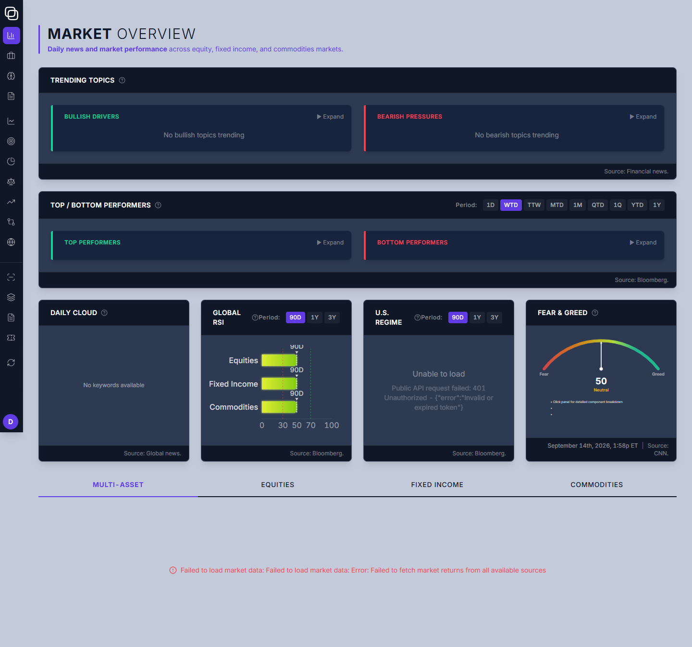
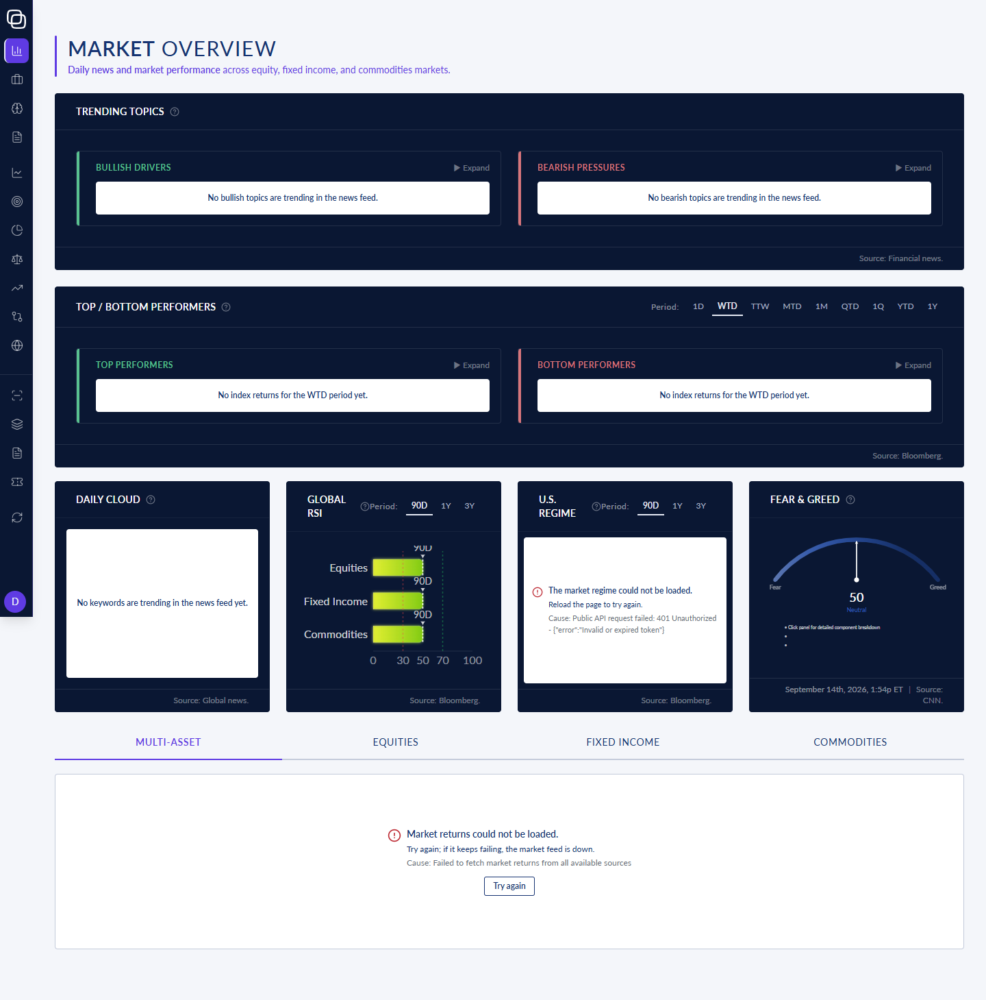
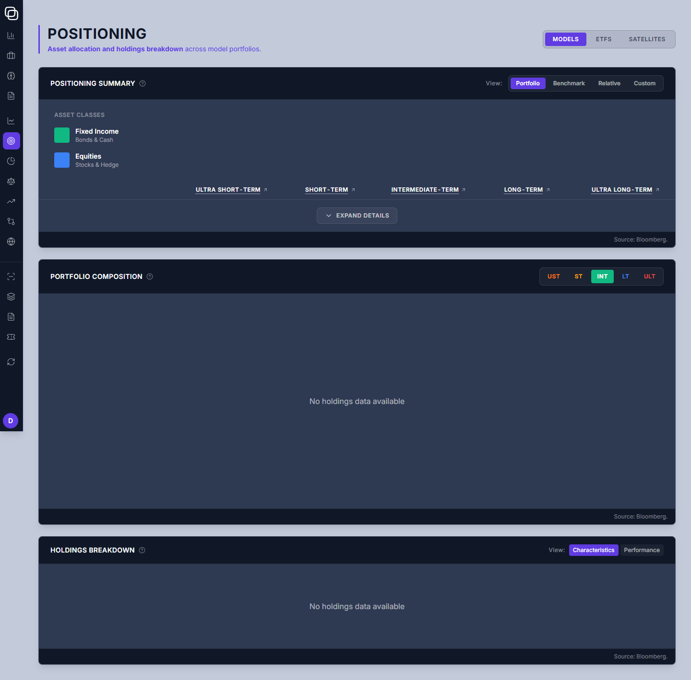
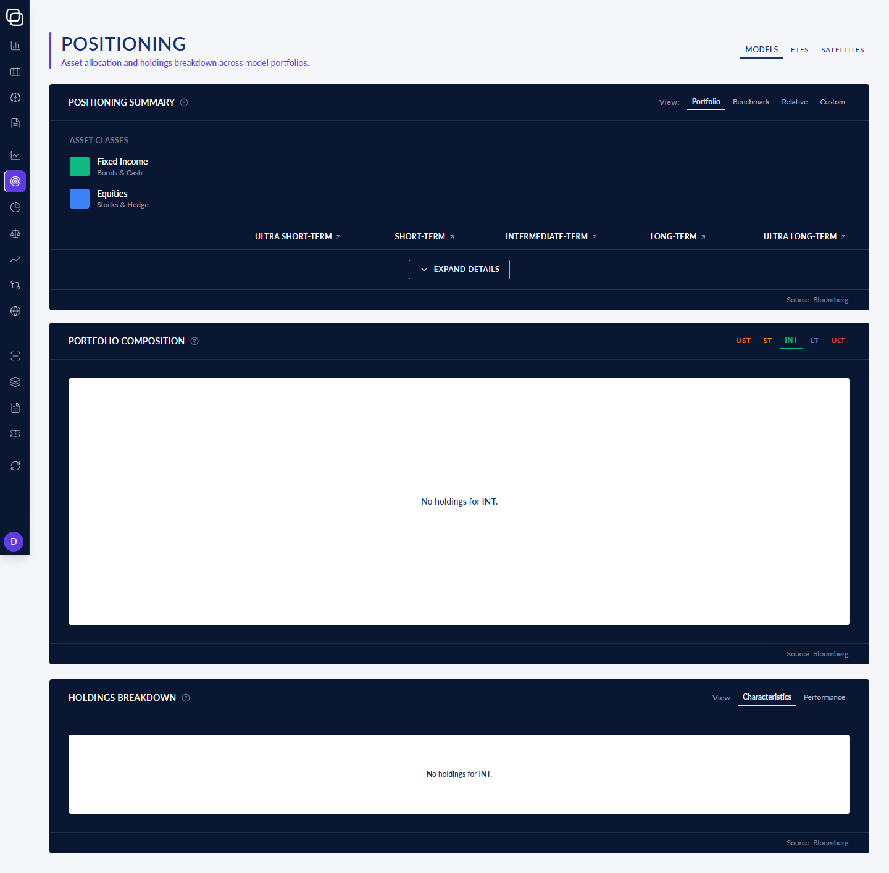
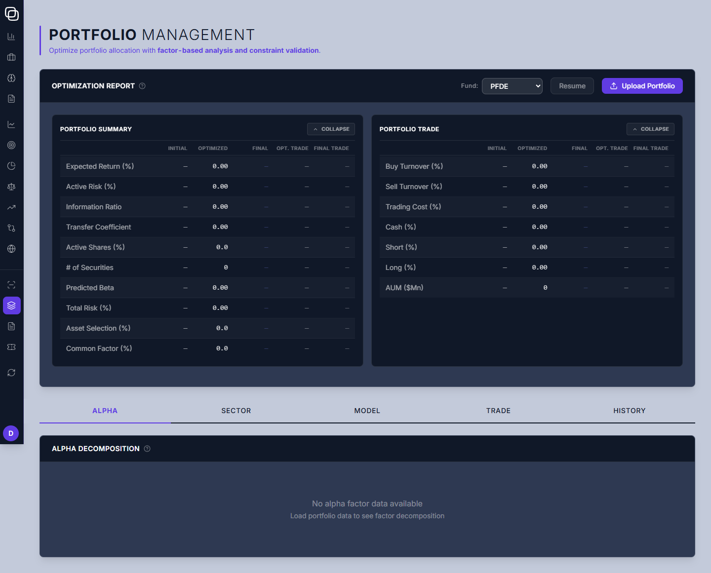
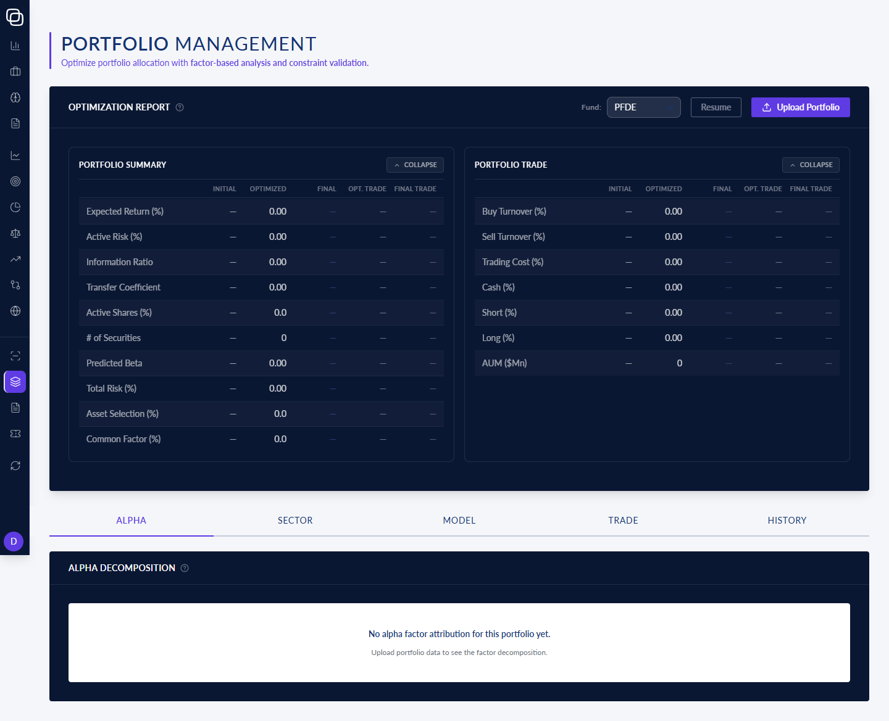

Opal portal: before and after round 1 of the rebrand
Three routes, Market Overview, Positioning and Portfolio Management, each rendered at 1440 px wide before and after round 1 of DSGN_REBRND. For putting on screen beside a competitor you choose.
Read this first: what this pack does NOT show
- The page bodies are still mostly dark-on-dark. On the AFTER side the page background is light
(
#F4F6FA; the capture script printedrgb(244, 246, 250)). But almost every panel is still a full-width dark navy block with light text, and the empty and error messages sit in white boxes inside those dark panels. - No cell of this round inverted the pages. Your Option A (panels go light, with one deliberate dark band per page)
is written into the contract, and the rule for inverting colours is committed (
design/brand/inversion-rule.json). But no cell of this round applied it to the pages.portal/CLAUDE.md:44counts 4,887 light-on-dark idioms still insrc/pages/. This is recorded in surprise rowDSGN_REBRND-S2. - So this side-by-side is not the finished rebrand. It shows this round's colour tokens, typography, controls, focus rings, density and empty/error states, on pages that have not been inverted yet.
- No data on either side. Both sides were rendered with no test data (no fixtures), against local development
servers whose data calls fail (
401 Unauthorizedis visible on Market Overview). So every panel shows its empty or error state, never real figures. A competitor's site will show data, and this pack cannot. - No competitor is in this pack. Capturing a competitor's site would be a request off Opal infrastructure, and it needs your word each time. You choose the competitor and put it beside this page yourself.
What the AFTER side carries that you asked for
- Your five identity accents, in indigo, at the five named places and nowhere else: the page-title rule, the
header subtext, the active tab's label and underline, the active sidebar item, and the avatar (portal commit
a7c4fa4f, RB-s-5 Amendment 1). The pre-round tree had indigo in these same places. Round 1 retired them and Amendment 1 restored them, so they look alike on both sides of this pair. - The new favicon: an indigo circle carrying the white Opal mark (shown at the bottom of this page, beside the old one).
How each image was made
| BEFORE (left) | AFTER (right) | |
|---|---|---|
| Portal tree | commit 787015e8: where the feature branch forked from DEV, before the round's first commit
964fc361 | commit 086371dd: every round-1 cell plus RB-s-5 Amendment 1 |
| Page background the script printed | rgb(195, 202, 218) (#C3CADA) | rgb(244, 246, 250) (#F4F6FA) |
| Same on both sides | capture script portal/scripts/ui-smoke.mjs (AFTER tree's copy;
the pre-round copy differs only in two printed lines); viewport 1440 x 900, full page; no fixtures; local dev server;
rendered 2026-09-14 (the Fear & Greed panel shows the time). | |
1. Market Overview /market
rb-s-15_market_before_1440.png
rb-s-15_market_after_1440.png
On the BEFORE tree, the bottom tab area is timing-dependent. One of two captures caught a loading spinner
(rb-s-15_market_before_1440_run1-loading.png, kept beside this page) and the other caught the settled error line
shown here. The AFTER tree showed the same error with a retry button in both of its captures. This is recorded in row
DSGN_REBRND-W1-S38.
2. Positioning /positioning
rb-s-15_positioning_before_1440.png
rb-s-15_positioning_after_1440.png
3. Portfolio Management /portfolio-management
rb-s-15_portfolio-management_before_1440.png
rb-s-15_pm_after_1440.png
4. Favicon
public/logos/opal-icon-color.svg @ 787015e8public/favicon.svg @ 086371ddBoth icon files are copied from the portal repository at those commits; nothing was fetched. Each is shown at 64 px and at 16 px, the size a browser tab uses.